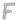
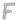
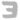
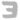

 



|
Please wait... Loading images... This should not take long...
Randomize | Reset | Toggle stats | Switch to 408 cipher | Switch to 340 cipher | Flip horizontally | Flip vertically | Rotate left | Rotate right | Find repeated sequences | Dump n-grams (all) | Dump n-grams (repeats only) | Dump alphabet stats | CryptoScope (NEW!) | Zodiac Typewriter (NEW!) | |
||
Technical caveat: I am assuming this is a simple monoalphabetic homophonic substitution cipher, and not something much harder like a transposition cipher or a polyalphabetic substitution cipher. The only reason I am assuming this is because the first 3-part cipher Zodiac sent to the newspaper was solved using homophonic substitution with a single alphabet (to see this, click the "Switch to 408 cipher" link above, and click the decoder named "The correct one").
Click here to view a high-resolution image of the 340 cipher.
Click here to read the Zodiac Ciphers wiki, a new repository of information related to the Zodiac ciphers.
{kind=link}